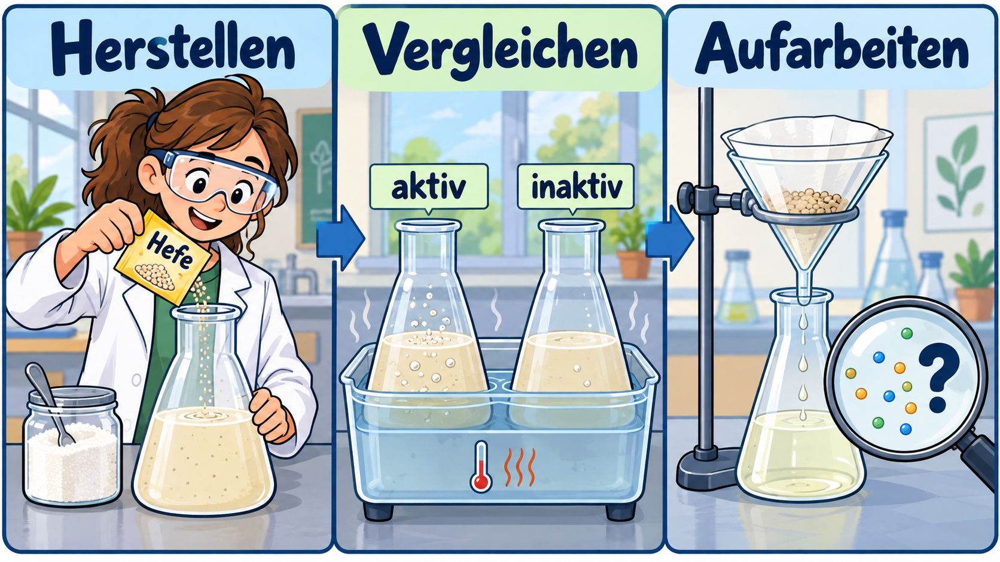

Stoffe mit biotechnologischen Verfahren herstellen

Die lernende Person kann einen biotechnologischen Herstellungsweg mit geeigneten biologischen Kontrollen planen, sicher durchführen, aufarbeiten und dokumentieren sowie die erhaltene Präparation und die Grenzen des Produktnachweises fachlich begründen.